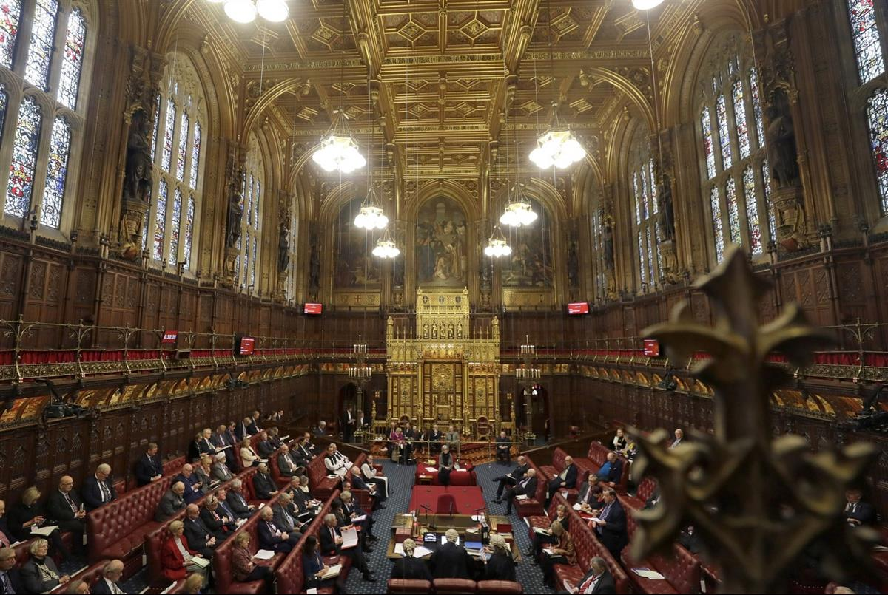

Channel 4 news editor Ben de Pear: ‘Kite-marking quality content desperately needs to be done.’ Photograph: Felix Clay
Tara Conlan Published onSat 2 May 2020 16.55 BST
Broadcaster tells Lords that internet companies must face penalties for uploading potentially ‘lethal’ misinformation.
A leading news organisation is calling for a digital “kitemarking” system online to distinguish between quality journalism and fake content – with internet companies facing penalties if they publish inaccurate information.
ITN, the maker of news for ITV, Channel 4 and Channel 5, says the coronavirus pandemic has revealed both the importance of “trustworthy and reliable information” and the dangers to democracy of fast-spreading misinformation.
In a submission to a House of Lords inquiry into the future of journalism, seen by the Observer, it says internet companies should face the same penalties as broadcasters and other quality news providers from regulatory bodies, such as Ofcom, if they let misinformation slip through the net.
ITN also calls on parliament to draw up a code of conduct for news suppliers and digital platforms to help prevent the dissemination of fake news. If agreement with the big digital companies on a voluntary code cannot be reached, it says, it should be made mandatory and negotiations time-limited so the big tech companies cannot drag their feet.

ITN made a submission to a House of Lords inquiry into the future of journalism. Photograph: Kirsty Wigglesworth/AP
ITN says the UK should look for inspiration to Australia, where, in April, the government became the first to introduce a compulsory code, set to be finalised in July.
The Lords inquiry is looking into how the production and consumption of journalism is changing, how journalists can be supported and how the profession can become more trusted by the public.
The coronavirus pandemic has shown “how trustworthy and reliable information is a critical part of the democratic life and wellbeing of UK citizens, [as] vast swaths of misinformation have spread rapidly on social media,” the ITN submission states.
Channel 4 News editor Ben de Pear said that kitemarking quality content “desperately needs to be done” to help viewers. The pandemic had shown that, at times of crisis, “people know that TV news is regulated” so audiences have grown, he added.
“This is a scientific story affecting everyone in the world, and you need proper journalism to interrogate what’s happening, inform people and hold government scientists to account, as well as spread the important messages they’ve got. There’s no better way to do that than regulated television news or excellent newspaper journalism,” he said.
Digital platforms were not doing enough to differentiate quality news from fake content, a failure that “could frankly be lethal” during a viral pandemic, he added. “Fake news has been exposed, [yet] they still haven’t got to the point where they are paying proper amounts for the journalism that is consumed by millions of people online, or properly differentiate it from the fake news which, at this moment in time, could frankly be lethal if you read the wrong thing.”
ITN CEO Anna Mallett said: “As we face a global pandemic, this review could not be more urgent. All our news programmes are seeing sharp increases in viewing figures as people seek out reliable, trustworthy information.
‘“That audiences are turning to the established, professional sources of journalism at times of crisis serves to underline their enormous value to society and underscores a need for action to protect the public service broadcasters and quality journalism in the future.”
The Lords inquiry is due to report in the autumn.
SOURCE: THE GUARDIAN